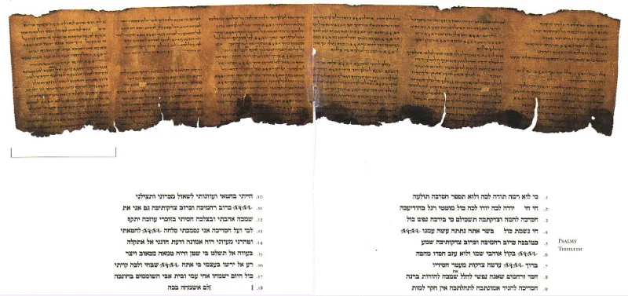

Psalm 22: 'lion' or 'pierced' — one Hebrew letter
ContestedSerious people argue this both ways. Say so before your friend does.
What the psalm describes
Psalm 22 opens with the words Jesus quoted while dying: "My God, my God, why hast thou forsaken me?" It goes on to describe a man surrounded by enemies, with his bones out of joint, mocked by watchers, and his clothing divided by lot. David wrote it centuries before crucifixion reached Judea.
The one disputed word
Psalm 22:16 is the fight. The standard Hebrew text reads roughly "like a lion, my hands and my feet." The old Greek translation reads "they pierced my hands and my feet." One Hebrew letter separates the two, and the two letters look almost identical.
What the evidence shows
A scroll fragment found at Nahal Hever, near the Dead Sea, supports the "pierced" reading. It is about a thousand years older than the standard Hebrew text we normally use.
That matters. But it is one fragment, and honest scholars still disagree.
How strong is this argument?
Contested — and admitting that is the whole point here. A Christian who claims verse 16 obviously says "pierced" will be corrected, and will deserve it.
Why this helps you
The rest of the psalm needs no argument at all. Psalm 22:7-8 has the mocking.
Psalm 22:18 has the clothing divided and lots cast. Nobody disputes those verses.
Give away verse 16 and read the rest.
What to say
"Let's set verse 16 aside — it's a real textual question. Read me Psalm 22:18."


How they answer this — at its strongest
The New Testament never quotes verse 16, the verse said to settle it.
They argue that ka'aru is not a known Hebrew verb for piercing. The root means 'dig', and 'they dug my hands and my feet' is strained. The standard Hebrew — 'like a lion at my hands and feet' — fits the psalm's animal imagery, which already has bulls, dogs and lions.
The psalm is David's own lament, written in the past tense, with no messianic label. Midrash Tehillim applies it to Esther. They also argue that the Gospel writers shaped the passion account on the psalm, which would explain the fit.
One detail lands hard. The New Testament never quotes verse 16. If 'they pierced my hands and my feet' were decisive, the evangelists somehow missed it. And nothing in the psalm teaches atonement for others.
The verdict
Contested: give verse 16 away, then read the rest of the psalm aloud.
Graded Contested, and honesty is the point. The textual evidence is real. The Septuagint and the Nahal Hever fragment do support an ancient verb here, and that refutes the charge that Christians invented the reading.
But whether that verb means 'pierced' is uncertain. And the New Testament's silence about verse 16 is a fact an informed friend will raise. Concede it before they do. Then read the rest of the psalm, which needs no argument at all: the mocking in verses 7 and 8, and the clothing divided by lot in verse 18.
Sources
- Psalm 22 (Sefaria, MT)
- NETS Septuagint translation (Psalm 21 LXX)
- Leon Levy Dead Sea Scrolls Digital Library
- Tovia Singer on Psalm 22 (Outreach Judaism)